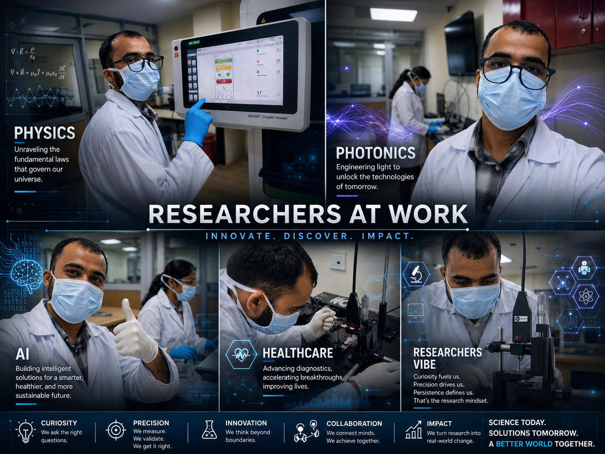

Digital Media Presence
Exploring the intersection of Physics, Photonics, AI, and Healthcare through educational videos, experimental demonstrations, podcasts, scientific storytelling, lab vlogs, and research communication.

🎥 Educational Videos
Short educational content explaining Raman Spectroscopy, SERS, optical sensing, AI in healthcare, and photonics concepts.
Explore Videos🎙️ Podcast & Research Talks
Scientific discussions, research experiences, conference insights, and research communication podcasts.
Listen Now🧪 Experiment Demonstrations
Lab demonstrations, optical setups, spectroscopy workflows, and real-time experiment recordings.
View ExperimentsFeatured Videos
SERS for Virus Detection
Introduction to machine-learning integrated SERS sensing platform.
Photonics & AI in Healthcare
Exploring modern photonic sensing systems with AI-assisted analysis.
Podcast & Audio Sessions
Research Journey Podcast
Sharing the experiences, failures, learning process, and breakthroughs during my PhD journey.
Research Journey Timeline
2024 — Optical Sensing & Raman Research
Started advanced work on Raman spectroscopy and machine learning-based sensing.
2025 — ML Integrated SERS Platform
Developed receptor-free rapid respiratory virus detection platform.
2026 — Research Communication & Digital Outreach
Expanding scientific communication through educational media and podcasts.